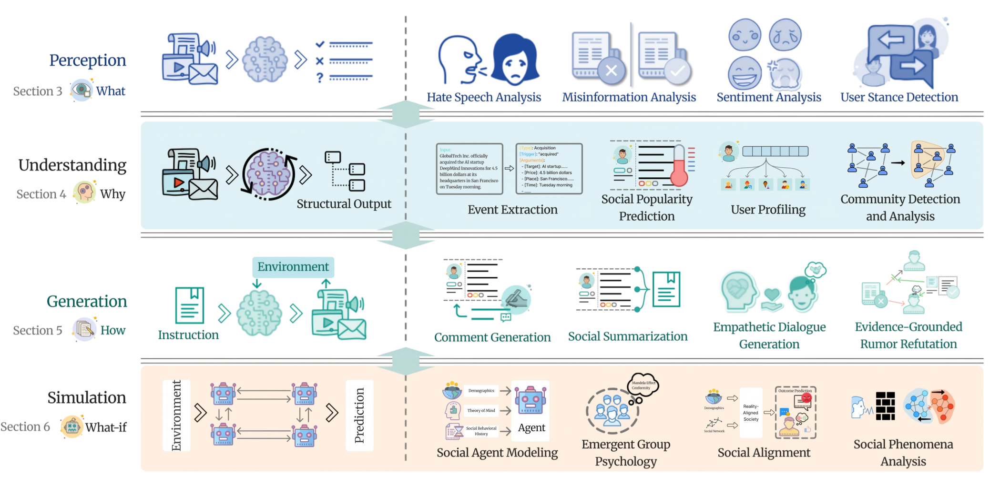
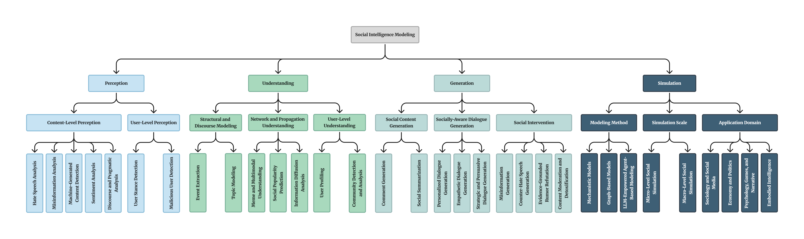

01
What?
Perception
Identify socially meaningful signals in content and actors: harmfulness, credibility, affect, stance, provenance, and maliciousness.
Survey level · Section 3A comprehensive survey · 2026
A Comprehensive Survey from Social Perception to Social Simulation
From recognizing what happens to exploring what could happen.
Huazhong University of Science and Technology · *Equal contribution
Social Intelligence Modeling (SIM) unifies how AI perceives social signals, understands individual and collective behavior, generates socially situated outputs, and simulates the evolution of social systems.
Overview
SIM moves from evidence extraction to structured interpretation, socially grounded generation, and dynamic what-if simulation.

Definition
SIM studies the representation, understanding, generation, and simulation of human and collective behavior in digital social systems using AI.
What?
Identify socially meaningful signals in content and actors: harmfulness, credibility, affect, stance, provenance, and maliciousness.
Survey level · Section 3Why?
Model structures, relations, behavioral patterns, communities, influence, and information propagation in social systems.
Survey level · Section 4How?
Create socially meaningful content, responses, summaries, dialogue, moderation, and evidence-grounded interventions.
Survey level · Section 5What if?
Reconstruct evolving social processes, model interacting agents, test interventions, and explore possible societal futures.
Survey level · Section 6Hierarchical taxonomy
The hierarchy connects the survey's four cognitive levels to task families, modeling methods, simulation scales, and application domains.

Chronological map
The heatmap counts AI4SS papers by publication year and primary research track. Darker cells represent denser activity.
Fine-grained paper list
Search and filter papers with official code repositories under the AI4SS GitHub account.
0matching papers
Living metadata
The page, figures, JavaScript explorer, and normalized paper data are stored together for static GitHub Pages hosting.
Entries are organized into AI4SS research tracks such as logical reasoning, social simulation, social understanding, and multimodal prediction.
Paper metadata is restricted to public repositories owned by the AI4SS GitHub account and their linked publication pages.
Open WeChat
This is a brief introduction to AI4SS, and we will continuously update the research pace and resources for this direction.
Scan the QR code in the discussion thread to join the Chinese community chat for AI4SS survey readers.